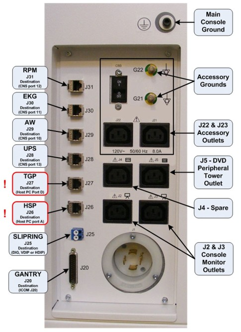

Operating Documentation
Direction 5307452-8EN, Rev# 4
Operating Documentation |
| Condition | Reference | Eff |
|---|---|---|
Direct Connect cannot be used without compatible software on BOTH the AW and CT/PET and correct AW hardware. | - | - |
AW: Requires AW 4.3 software (AW4.3_03A.07_EXT or above) and HP xw8000 or above computer. | - | - |
CT/PET Minimum software required: VCT (GOC5) - 06MW03.4 or GRE (GOC3/GOC4) - 06MW03.5 | - | - |
A gigabit network is required to use Direct Connect over the hospital backbone. If you believe the hospital backbone is a gigabit network but the software will not enable you to configure Direct Connect over the network, check to see if a < 1 GB switch is pulling down the network speed to the system.
With Applications software up, select the [Service] icon to access the Common Service Desktop.
Select the [Configuration] tab.
Select [Configure AW Direct Connect] .
Enter AW IP address.
Select [Accept] .
You will receive a message indicating that the AW IP address has been configured for Direct Connect. You will now be able to use Direct Connect with this AW.
Select [Dismiss] to exit out of GUI.
Switch to the Service icon.
Select the [Configuration] tab.
Select [Configure AW Direct Connect] .
Enter AW IP address.
Select [Delete] .
You may receive a message indicating that the AW IP address has been un-configured for Direct Connect.
Select [Dismiss] to exit out of GUI.
Use this section for “Direct Line” connection setup.
| NOTE: | For GOC6 Consoles: Before starting configuration, the
AW Workstation network cable must be connected to the J29 on the Rear
Bulkhead Panel of the GOC6 Console (xxx). For earlier GOC Operator
Consoles, check the appropriate Installation Manuals for port location. Illustration 2: Rear Bulkhead Panel Connects  |
Switch to the Service icon.
Select the [Utilities] tab.
Select [Application Shutdown] .
Open a Unix Shell.
Login as root and enter the proper password:
| NOTE: | If the Password has not been modified by the site and is not known, contact Local GE Service. |
su -
Password:
Type: reconfig
Select [Config] .
Select the [Network] tab.
Select [Enable AW Direct Connect?] button to configure the console for Direct Connect.
Copy down the following information, as it will be required for the configuration of the AW:
Select [Accept] .
Upon restart, the console will be correctly configured for AW Direct Connect.
The CT/PET software only allows one AW to be configured via the GUI for Direct Connect over a direct line. If a site has multiple AW’s on a Direct Connect network (isolated from the hospital backbone), you may manually configure the additional AW's. You still need to configure the first AW via the GUI steps outlined in Configuring the First AW for Direct Connect over a Direct Line to enable the Direct Connect feature.
Open a command window.
Login as root and enter the proper password:
| NOTE: | If the Password has not been modified by the site and is not known, contact Local GE Service. |
su -
Password:
Type: cp /etc/exports{,.lfc}
Type: echo "/usr/g/sdc_image_pool X.XX.XX.XX(async,ro)" >> /etc/exports
Enter IP address of second Ethernet card of AW (eth1) in place of X.XX.XX.XX.
Type: /etc/init.d/nfs restart